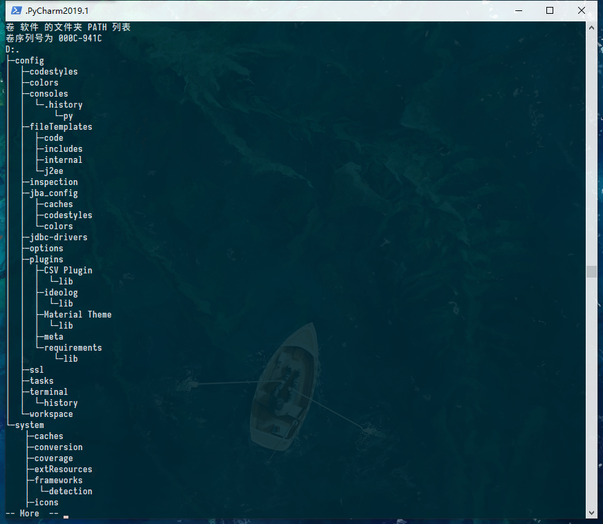
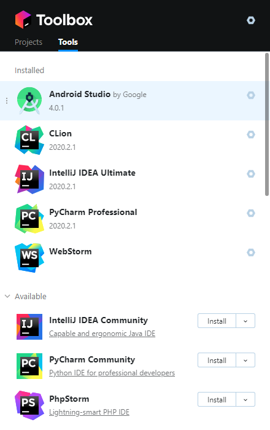

JetBrains IDE
在Java世界无敌的IDEA功能渐趋完善后，其用户配置的同步与存储仿佛成了问题。由于本人的渣渣配置笔记本，C盘空间日渐捉襟见肘。无奈之下，只好寻找将IDE的用户配置的存储位置更换到其他盘。
打开C:\Users\Administrator文件夹可以看到，这里存放了大部分软件的配置信息（.[Name of the Software]文件夹）。在2020版之前，可以看到IDEA，Pycharm，Webstorm等JetBrains全家桶都是以.[软件名+版本号]文件夹存储IDE的配置信息（如字体、外观主题、插件等）

.PyCharm2019.1文件夹的目录结构
但是当使用时间长之后，IDE的配置目录大小会越来越大，甚至达到十几个G，配置的同步与存储成了问题。
之前的解决方案
如果我们要更换配置文件存储目录，例如我的是PyCharm2019.1版本的（IDEA同理）：
- 迁移
{用户目录}/.PyCharm2019.1文件夹到D:/Program Files (x86)/.PyCharm2019.1 - 修改
{PyCharm目录}/bin/idea.properties文件的内容如下：- 或者Help→Edit Custom Properties
1 | # custom PyCharm properties |
重启搞定。
现在的解决方案
使用JetBrains的ToolBox软件管理全家桶软件，到官网下载ToolBox。他会统一将软件下载到同一个目录下，并且将配置文件统一放到{用户目录}/Appdata/Roaming/Jetbrains文件夹下。
其界面如下：

更重要的是，它允许ide的配置与JetBrains账号绑定，将配置信息上传到云端，只需要登陆账号便可以进行同步（右下角云同步图标）
从此，重装系统再也不怕用户配置丢失啦！
NPM/Yarn
刚发现一篇文章已经讲述过这样的操作：npm默认配置
当你安装了Node.js8.0+后，默认的包管理器是npm。
查看npm配置
1 | npm config ls |
或者{用户目录}/.npmrc文件
默认情况下，，npm的本地仓库在 {用户目录}\AppData\Roaming ，npm文件夹存放着全局包和命令行文件，npm_cache则为一些缓存信息。
这时候可以直接修改默认配置（.npmrc文件或者命令行npm config set {配置项} "{配置}"）
例如我的配置
1 | registry=https://registry.npm.taobao.org # 仓库镜像源 |
然后再修改环境变量，在Path中添加{prefix}的路径即可
yarn的配置也同理可以修改.yarnrc文件
最后
这样一来，又给C盘清理了不少空间呢🤣🤣🤣
有钱一定得换一台配置高的电脑！